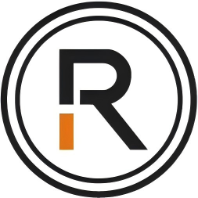
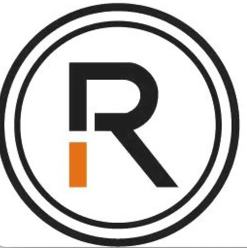

Project
Real-world value identified.

RWA.LTDRWA.LTD ECOSYSTEM
RWA.LTD connects project owners, digital infrastructure, platforms, commerce and fulfilment.
Explore the ecosystem →
HOW VALUE MOVES
One connected path from the underlying opportunity to circulation and fulfilment.
Real-world value identified.
Rights and rules defined.
Digital representation issued.
Connected across platforms.
Utility returns to the real world.
RWA TOKEN / PLATFORM TOKEN
The RWA token represents the platform layer connecting participating projects, infrastructure and circulation channels.
Connect with RWA.LTD →Connect projects with shared infrastructure.
Support participation across the RWA.LTD network.
Link circulation with real-world fulfilment.
SELECTED PROJECTS
Real project tokens connected through the RWA.LTD platform ecosystem.
BUILD WITH RWA.LTD
Connect your project with the infrastructure, platforms and channels needed to move from real-world value to real-world utility.
GET IN TOUCH →